| Material Name | 1input Outputs | 2input Outputs | 3input Outputs | 4input Outputs | 5input Outputs | Ground Truth |
|---|---|---|---|---|---|---|
| bark gammaCorrectedInputs | 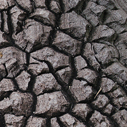 | |||||
| bark inputs | 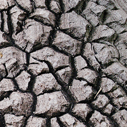 | |||||
| normal | 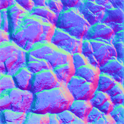 | |||||
| diffuse | 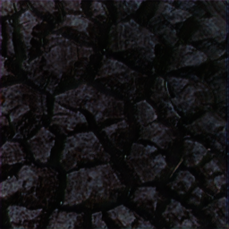 | |||||
| roughness | 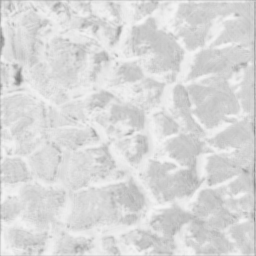 | |||||
| specular | 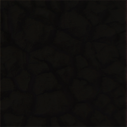 | |||||
| bricks gammaCorrectedInputs | 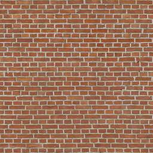 | |||||
| bricks inputs | 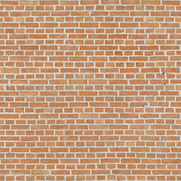 | |||||
| normal | 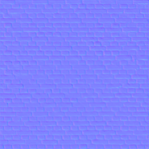 | |||||
| diffuse | 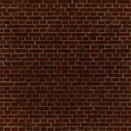 | |||||
| roughness | 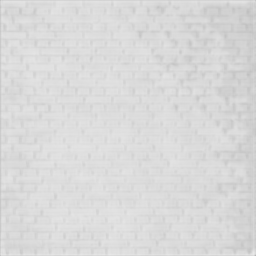 | |||||
| specular | ||||||
| grass gammaCorrectedInputs | 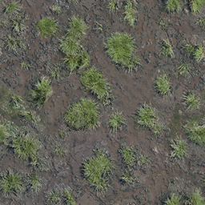 | |||||
| grass inputs | 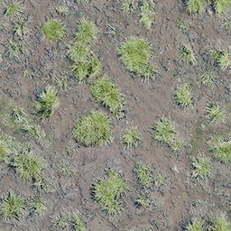 | |||||
| normal | 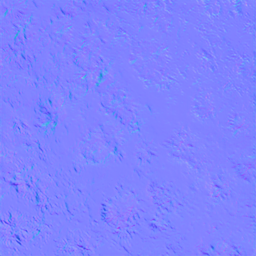 | |||||
| diffuse | 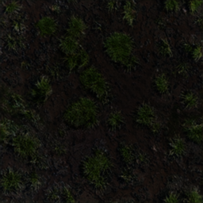 | |||||
| roughness | 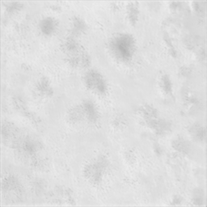 | |||||
| specular | ||||||
| rockmoss gammaCorrectedInputs | | |||||
| rockmoss inputs | | |||||
| normal | 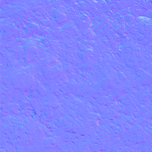 | |||||
| diffuse | 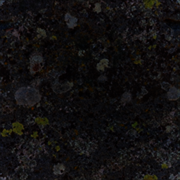 | |||||
| roughness | ||||||
| specular |